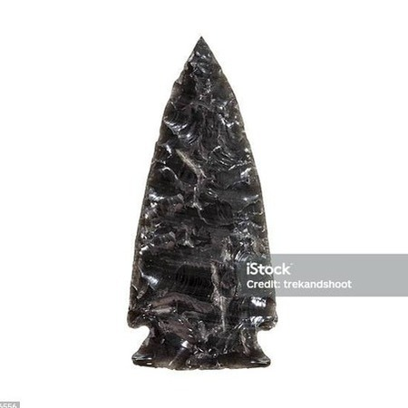

Obsidian, a great material

Finding and shaping
Obsidian is a volcanic rock, so if you live near any old lava flows it is a material that should be easy enough to find. In nature it is a black looking stone that is a little transparent. A common description of obsidian is volcanic glass, which is accurate. While it can be hard to find it in thin slabs it is reasonably easy to shape by breaking it with a hammer or stone. If the obsidian has flecks of a different color, it may not be usable because those flecks are often a different grain than the rest, making it almost impossible to flake.
crafting and traits
Obsidian is possibly easier to work than glass and is also a little tougher and sharper. All you need to do is set your tool to the edge and press hard and a flake will come off.
